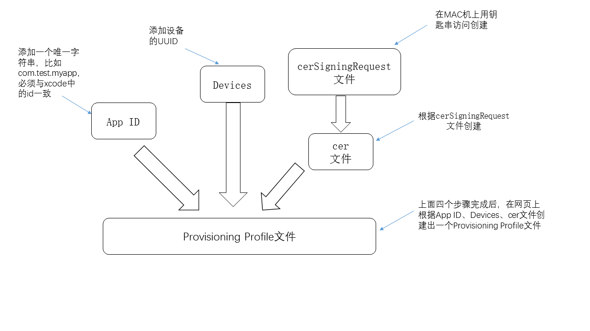

iOS真机调试有多坑就不多说了。
今天上午，心平气和的花了一点时间，看了这篇文章：iOS真机调试(史上最详细步骤解析,hmt精心打造)。终于搞明白了这些东西。 下面我从简洁实用的角度复述一遍这个过程，读者朋友如果要看那篇文章也是一样的。并且那篇文章有主要的截图，我这里就不放截图了。此篇主要说概念和步骤。
一共涉及到五个东西：
-
Devices
-
APP ID
-
cerSignRequest文件
-
cer文件
-
Provisioning Profile文件
cerSignRequest文件是在MAC上操作的。其余四项都是在网页上操作的，需要登录Member Center，进入“Certificates, Identifiers & Profiles”页面。
1，这五个东西里面，Devices是最容易操作的一步。当你需要添加新的调试设备时，只需点击加号，添加设备的UUID即可。UUID可以设备连接电脑时在iTunes里看到。
2，APP ID也是相对容易的一步，就是给你的APP起一个名字，一般推荐使用反向域名的方式。比如你的APP英文名叫myapp，你们公司（或者你自己）的域名是test.com，那么你就可以起一个APP ID叫com.test.myapp。在开发的时候，Xcode里项目属性中的Bundle Identifier也必须是这个com.test.myapp。在这一步，可以选择你的APP所需要的权限，比如访问设备位置、访问Game Center等等。将来发布的时候，在iTunes Connect里的APP的套装ID也是这个APP ID。
前面所说的这两个东西，不依赖于其余三个东西。也就是说，你可以先搞这两步。
然后这三个东西，是有前后关系的。下面按顺序说明。
1，cerSignRequest文件，是在MAC上创建的。打开“钥匙串访问”，在左上角菜单选择“证书助理”-“使用key从证书颁发机构请求证书”， 填写Email和名称即可，选择存储到磁盘。
2，cer文件，在网页上，选择Certificates点击加号，按照提示逐步创建即可。在选择APP ID的那一步，选择你创建的APP ID， 在Generate your certificate那一步，选择在MAC上创建的cerSignRequest文件。 创建完毕以后，最后一步可以下载这个cer文件并双击导入你的mac。
3，最后，终于到了Provisioning Profile这一步。一个Provisioning Profile相当于前面四个东西的合集。 如果前面四个东西都创建完毕了，创建这一步就很简单了。点击加号，根据提示选择对应的APP ID、certificate、devices， 最后再给profile起个名字即可。创建完毕以后，最后一步可以下载这个mobileprovision文件并双击导入你的mac。
这五个东西，Devices和APP ID属于操作步骤，没有对应的文件。后三个东西则是真实的文件。这些步骤都完成后， 就可以在你的mac上开发项目并真机调试了。
如果你要在其他的MAC上开发这个项目，或者别的同事也要开发和调试这个项目， 需要在你的Xcode中把账户信息导出成一个developerprofile文件，在其他mac上用xcode导入这个文件即可。 操作很简单，参看：Exporting Your Signing Identities and Provisioning Profiles、 Importing Your Signing Identities and Provisioning Profiles。
下面来个一图抵千言：

现在回想起来，这点东西并不复杂。但是为什么会这么坑呢？主要是不了解这些东西的相互依赖关系。除了Devices比较独立，也好理解，遇到相关的操作也可以无脑操作。其余的几项，就必须心中有数才能操作了。
更加坑的是，当这几个东西没有搞好，想要真机运行出现错误提示时，Xocde会提供一个看似很人性化的功能：“fix issues”。这个功能，有时候能够把问题给fix掉，更多的时候它不但没有解决问题，反而让情况变得更乱。当你fix过几次以后，再打开Member Center，发现多了很多xcode创建的cer文件和Provisioning Profile文件。你在新的电脑打开xcode，登录你的开发者账户，xcode还会自动的识别这些远程的这一大堆Provisioning Profile，然后当出现问题时，你就可能会徒劳的在这一大堆profile里面选来选取，就是不成功。殊不知真正的问题往往是出在你没有导入cerSignRequest文件和cer文件。
还有一个很常见的坑：你从GitHub上或者从别的什么地方下载了一个项目，它的Bundle Identifier肯定是起了一个你没有用过的名字，如果你想在模拟器上运行一般是没有问题的，但是如果想要在真机上调试运行的话，就要进行一下两步了：
-
在Member Center新建一个APP ID，也就是你下载的项目的Bundle Identifier，可以用原来的，也可以自己起一个
-
同样是在Member Center新建一个Provisioning Profile，选择刚才的APP ID。创建完了以后下载并导入Xcode。
有了这两个步骤以后，你应该就可以在真机上调试下载下来的项目了。